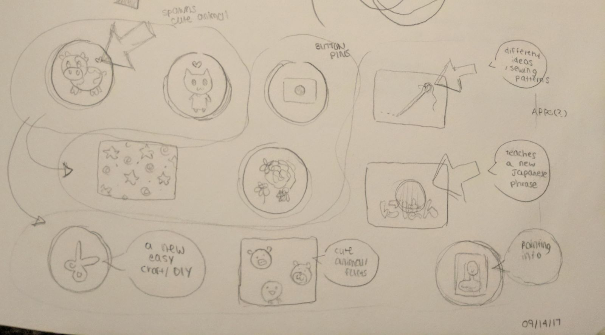
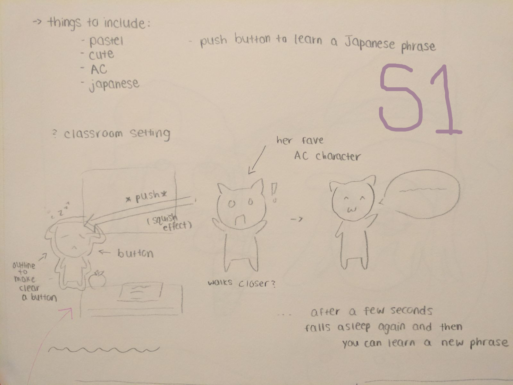
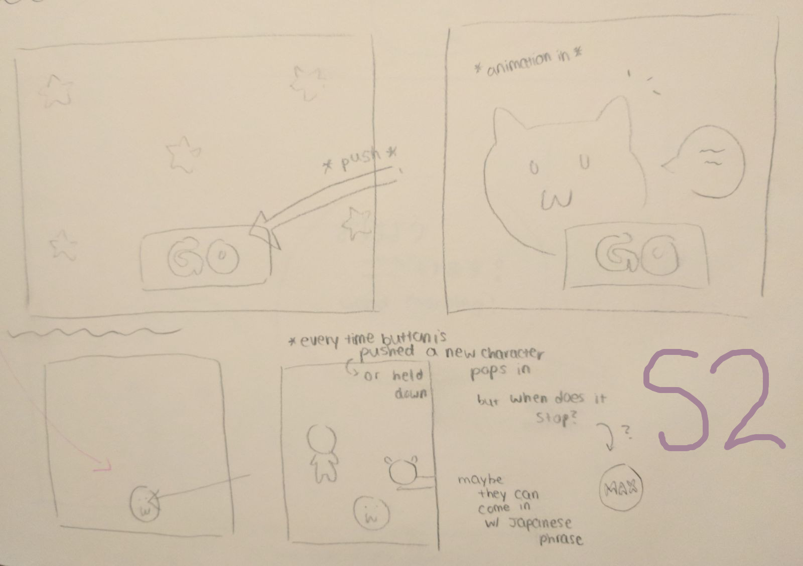
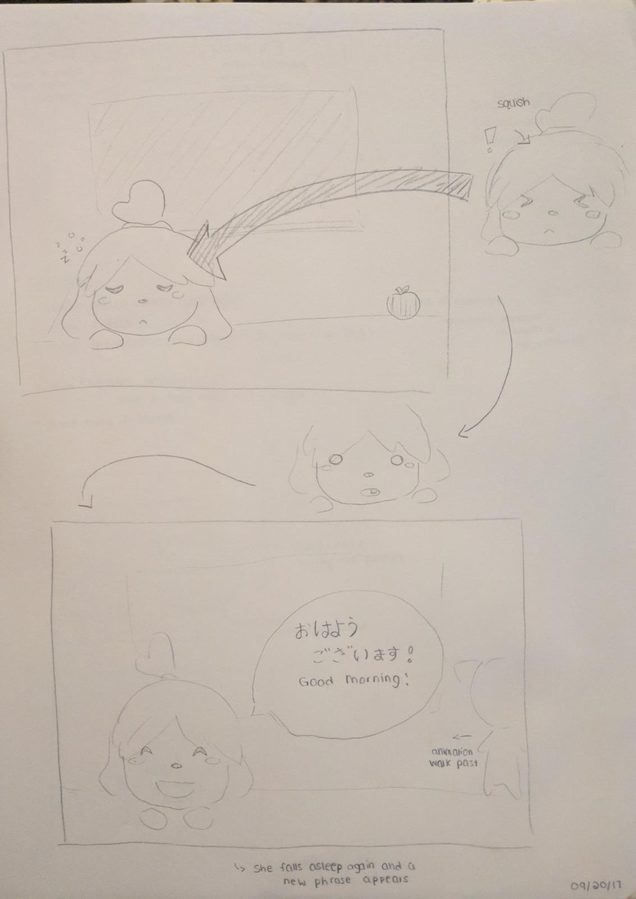
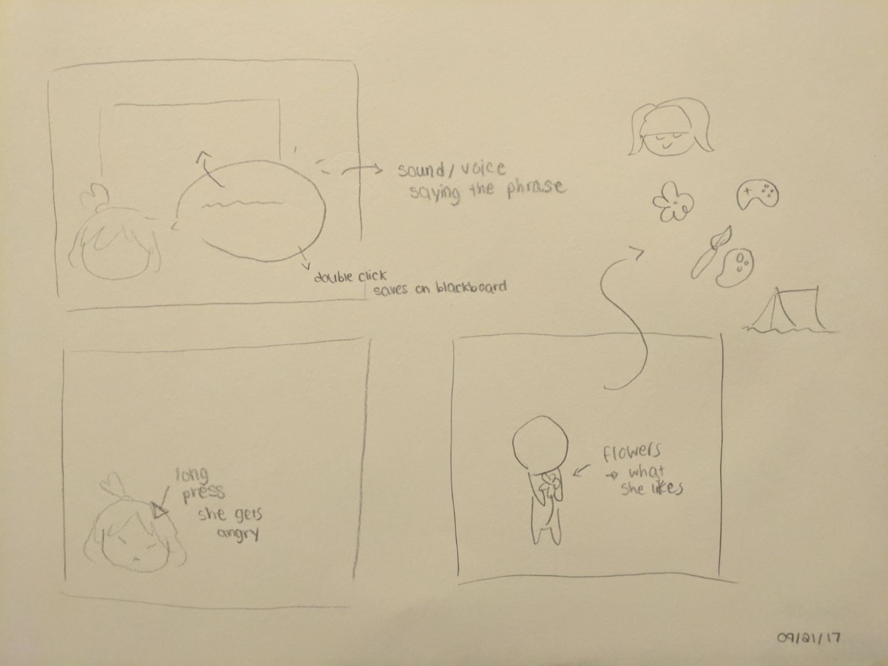
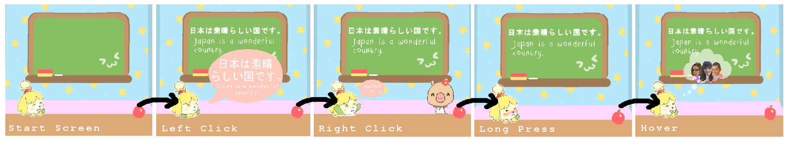

Based on many things that delight my client Mia, The < MIA > Button incorporates many of Mia's likes and also serves as a tool to help her with her Japanese studies - all with the click of a button represented by an interactive character from one of her favourite video games.
The Task: Create a button that represents another student in class (your "client"). Your client should recognize themselves in the thing you create, and be delighted.
The User: My "client" Mia, is a student who adores all things cute. She loves playing video games like Animal Crossing and she has many other interests like art and flowers. Mia is also currently learning Japanese.
IDEATION
After the interview with Mia, I started to think of different possible button aesthetics and functionalities that reflected her hobbies and likes.

REFINEMENT


For the first refinement I had two main ideas where I decided to combine two of Mia's interests: Animal Crossing and learning Japanese, where the visuals would be based off of the video game and suit her preference for cute styles and the functionality would be based on learning Japanese phrases, a passion of hers that is a big part of her life.
In the sketch labelled S1, the setting is in a classroom where the button is the character. You interact with the button by clicking and "waking" them where they then teach the user a Japanese phrase. In the sketch labelled S2, I focus on the idea of a button activating animations of different Animal Crossing characters appearing and teaching the user Japanese phrases.
By the end of the initial refinement, I came up with a button design that combined features of both ideas. The three main things being: the character as the button, the functionality to learn Japanese and there to be animations present.

CHANGE
After the group critique, I decided to flesh out more interactions with the button and have there be more aspects that reflect who the user is. My idea was to add a few more features, such as sound, saving phrases, different interactions like a long press, and have the characters who walk by represent something that my client enjoys.

IMPLEMENTATION
The < MIA > Button was developed in Visual Studio and Blend. The button is the character, Isabelle (from the video game Animal Crossing) and you can hear and learn from ten different Japanese phrases with just one click.
You can also say hello to 4 different characters, each representing an interest of Mia. Don't disturb Isabelle for too long or else she'll get angry - she's having a good dream (feel free to take a peek!)

Video Demo:
FINAL COMMENTS
In the future, the biggest thing I'd like to work on are my animations to make it more realistic and flow better. I'd also like to add more characters that reflect more aspects of Mia.